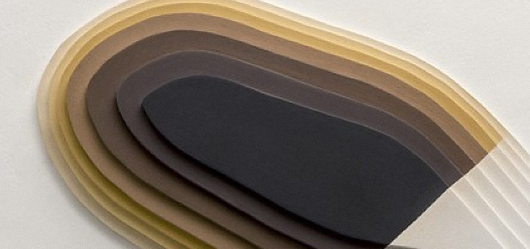
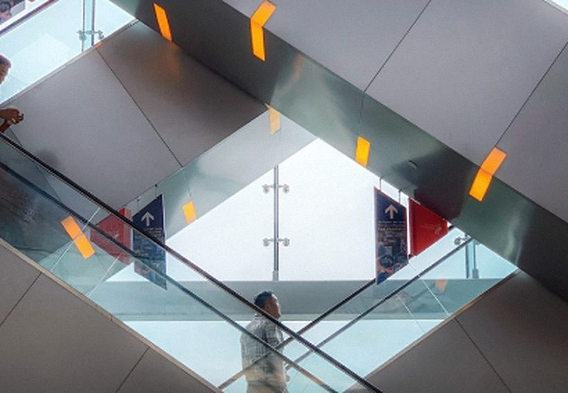

MAC: reservar una visita escolar al museo, con el trámite incluido
App de reservas para el Museo de Arte Contemporáneo de la Universidad Nacional del Litoral, en Santa Fe. Investigación, personas, pruebas de uso y la interfaz final, de la entrevista al mockup.
El problema
Las escuelas de Santa Fe necesitan un proyecto formal, presentado con 30 días de anticipación y aprobado por la dirección y la supervisión, antes de salir con los alumnos. El museo reservaba por teléfono, así que los docentes nunca tenían la información que ese proyecto pide: contenido de la muestra, duración, cupo, accesibilidad y horarios.
PERSONA 1
Claudia, vicedirectora. Dirige una escuela grande con muchos grupos y turnos. Necesita toda la logística para planear una salida de varios cursos.
PERSONA 2
Brenda, trabajadora social. Visita con adultos con discapacidad intelectual. Necesita saber si el contenido les sirve y si el edificio es accesible: rampas, sillas de ruedas, lengua de señas.
El objetivo de las dos: reservar una visita guiada y salir con un archivo descargable que ya contenga todo lo que pide el formulario del proyecto.
El método
Entrevistas semiestructuradas, dos personas, mapas de recorrido, storyboards, wireframes en papel y digitales, dos rondas de pruebas de uso y mockups de alta fidelidad.
Qué cambiaron dos rondas de pruebas
Ronda 1
- La información de la muestra tiene que incluir descripción general, dinámica, obras, precio, edad sugerida, duración y reglas.
- La información del museo: fachada, plano, historia, equipo, propósito, por qué visitarlo y horarios.
- Se descarga no solo la confirmación, sino todo el dossier de la muestra, ordenado.
Ronda 2
- Una pantalla de bienvenida con la foto de la fachada, antes de iniciar sesión, para que la gente reconozca el edificio.
- Fecha y hora con un selector directo de turnos y un calendario de fechas disponibles, en lugar de texto escrito.
- Accesibilidad: contraste suficiente, ajustes de mayúsculas y contraste, ninguna transición que dependa de deslizar y soporte para lectores de pantalla.
Las pantallas finales
La reserva, programada: no son capturas. Se puede recorrer a mano (el calendario, los turnos y la cantidad de grupos responden) o mirar el flujo solo con «Ver el flujo».
Los componentes
Cada componente, con todos sus estados: botones, campos, selección, chips, tarjetas, menú y diálogo. Está en inglés.
- 36 dp
- Button height, 2 dp square edge
- 56 dp
- Text field height, 12 sp floating label
- 48 dp
- Minimum touch target for every control
- 4 · 10 · 12 %
- Hover, pressed and focus state layers


Colección permanente
